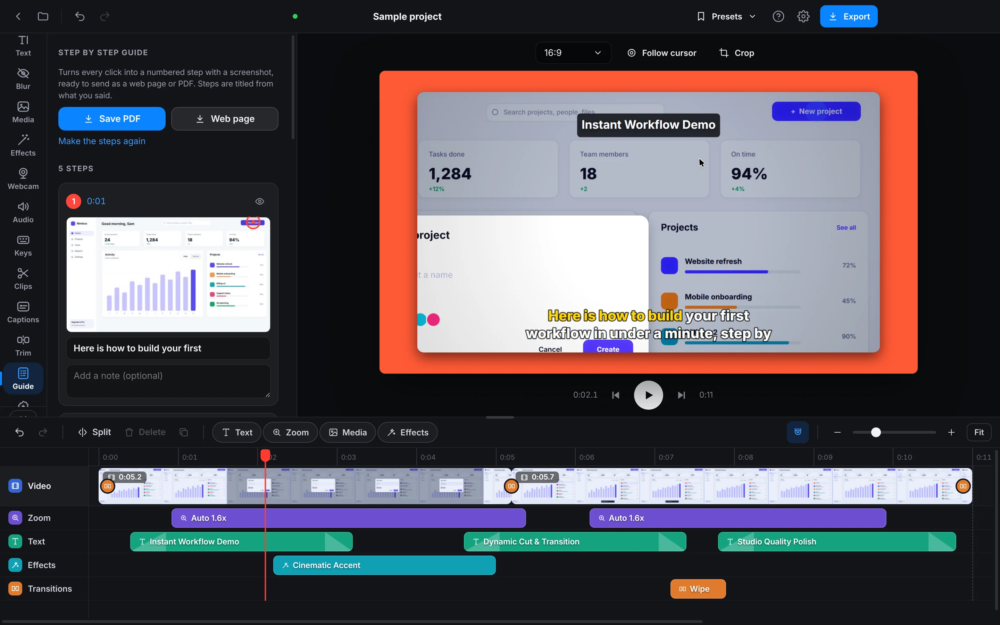
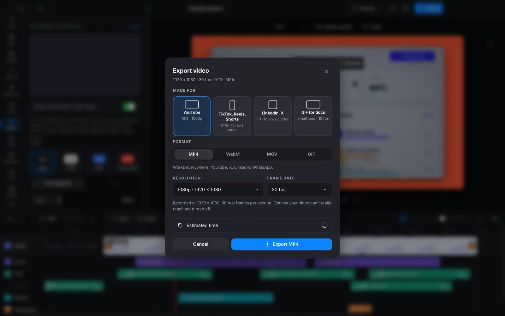

Screen recordings that look edited.
Hit record and use your app like normal. Scrim adds smooth zooms where you click, a clean frame, a polished cursor and captions from your voice. No editing skills needed.
Record once. It already looks produced.
No keyframes, no timelines full of tiny edits. Scrim watches your clicks, typing and voice, and does the slow parts for you.




Small touches that make it feel pro
Click export and you're done.
Captions from your voice
Six styles, your font and colors. Runs offline on your PC, or fast online with Groq. Save subtitle files too.
Shortcuts on screen
Shortcuts you press show up as clean keycaps. What you type is never recorded.
Clear voice
Removes fan hum, keyboard noise and echo, and evens out your volume. Any mic sounds good.
Smart trim
Finds the slow parts, like pages loading or you hunting for a window, and speeds them up or cuts them. You approve every change.
Webcam bubble
Your face in a circle or rounded box. Move and resize it right on the preview.
Brand kit
Save your logo, colors, font, intro and outro once. Use them on any video in one click.
Hide private info
Block out emails, passwords and customer names. It stays hidden even when the view zooms in.
keyframes to set by hand
to export for any platform
sharp exports, up to your screen's full size
of your videos stay on your PC
From idea to shared video in minutes
-
1
Record
Pick your screen, a window or a browser tab. Add your mic, PC sound and webcam. The small control bar never shows up in the video.
-
2
Polish
Zooms, frame and cursor are already done. Tweak anything on a simple timeline: cut, speed up, add text, music and transitions.
-
3
Share
Export for YouTube, TikTok, LinkedIn, a GIF, or a step by step guide. Your files stay on your PC.
Good to know
Something else on your mind? We read every message.
Is Scrim free?
Yes. Download it and use every feature for free. There's no watermark on your videos and no account to make.
Which computers does it run on?
Windows 10 and 11, for now. A graphics card makes recording and exporting faster, but it isn't required.
Do my recordings leave my computer?
No. Recordings, projects and exports stay on your PC. Captions can run fully offline. If you choose Groq for faster captions, only the sound is sent to be turned into text. Crash reports are off unless you turn them on. Read the privacy page.
Windows says "Unknown publisher". Is it safe?
Yes. That message shows for new apps that aren't signed yet. Click "More info", then "Run anyway". Scrim keeps itself updated after that.
How do updates work?
Scrim checks for new versions quietly and downloads them in the background. When one is ready, one click restarts into it.